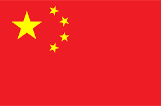
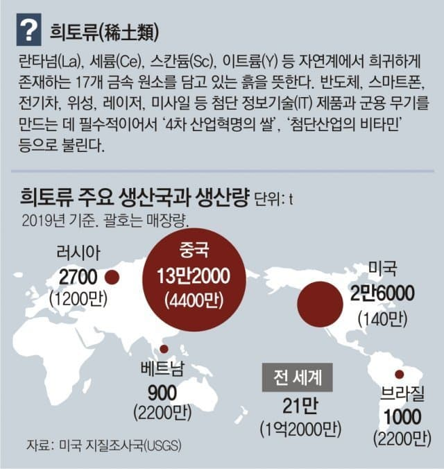
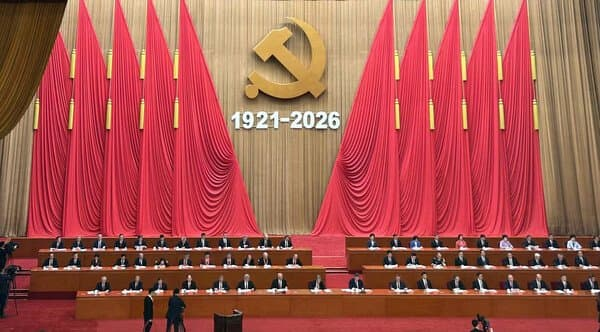
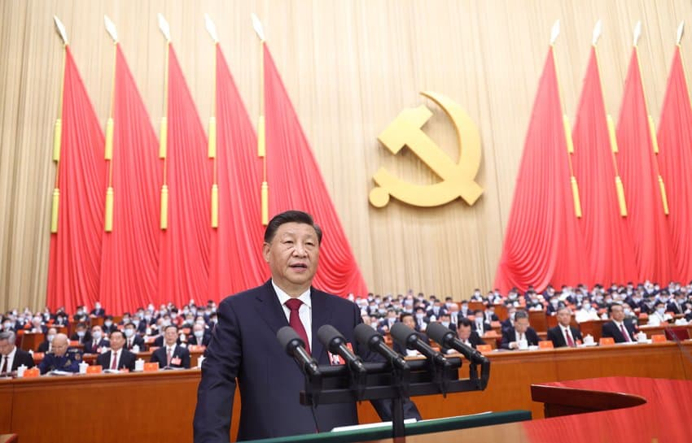
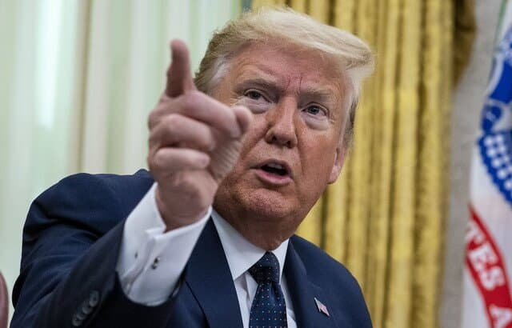
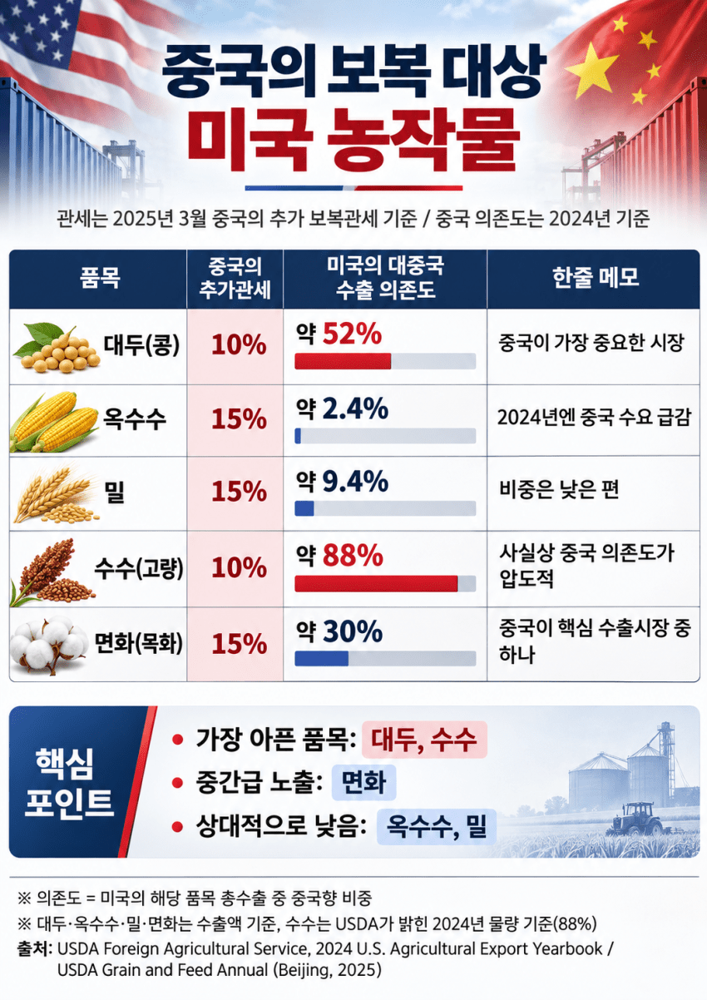
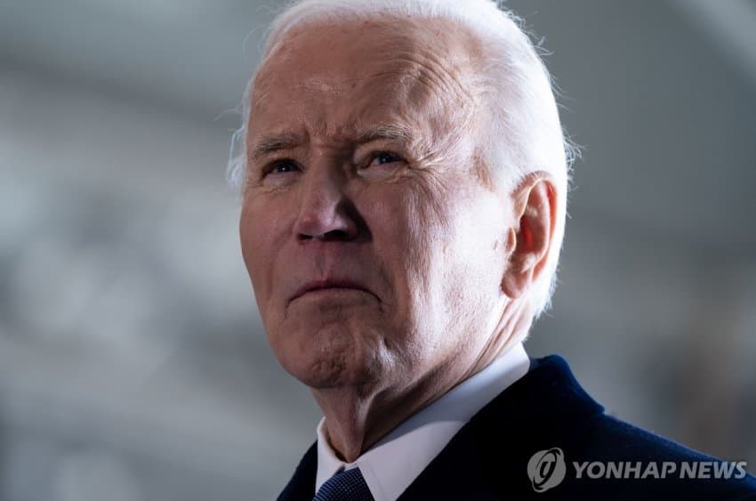
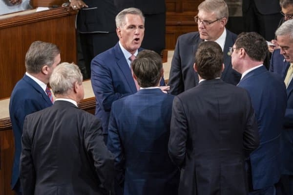
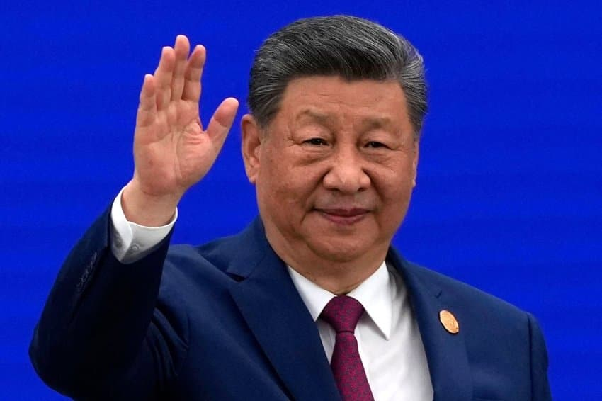

미국과 중국이 2010년대 후반부터 무역전쟁을 할 때마다 결국 미국이 물러나고 있다.

그 이유로 중국의 희토류 수출통제
중국의 미국농가 공격
무역전쟁으로 인한 미국 물가 상승 등이 꼽힌다.
다 맞다. 그리고 여기엔 근본적 이유가 있다.

중국은 독재국가고 미국은 민주주의국가라서다.
무슨 뜻이냐면...

무역전쟁으로 민생이 힘들어지면 미국 정치인들은 눈치를 보지만 중국정치인들은 눈치를 안본다.
그러니 계속 싸울 수 있다는 것이다!

예를 들어 트럼프가 1기, 2기 모두 중국과 무역전쟁을 벌였는데 그때마다 중국이 곧바로 때린 분야가 농업이다.

미국 농산물의 중국 의존도가 크다보니, 중국이 수입을 안해버리거나 관세 때려서 가격경쟁력을 떨어뜨리자
큰 타격을 입었거나 입을 미국 농가들이 공화당을 선거에서 뽑지 않겠다고 겁을 주었다.
공화당의 주요지지층인 농가가 돌아서면 선거에서 불리할 것은 당연하다.
또, 농가들이 로비해놓은 정치인들을 압박해 행정부와 여당에게 압력을 넣게 했다.
결국 트럼프가 무역분쟁에서 크게 후퇴하는데 큰 역할을 했다.

바이든도 2022년, 트럼프 시절의 대중국 관세를 일부 완화했다.
자동차 부품, 전동기, 화학제품, 자전거 등 352개 품목에 대한 추가 관세 면제를 복원했다.
(그외엔 트럼프가 물린 관세를 대부분 유지하고 2024년엔 중국전기차에 관세를 추가부과하기는 했다.)
언론에서 고물가로 국민들이 고통받고 있다고 연일 때리고,

야당 공화당 의원들도 인플레이션으로 공격을 하자 지지율이 안좋아져서, 값싼 중국 상품에 추가관세를 철회한 것이다.
민주정은 국민, 야당, 언론, 이익단체 등 정권을 비판하고 견제하고 압력을 넣는 주체가 많다.
무역전쟁으로 먹고 살기 힘들어지면 선거에서 패배하니 지도자와 여당은 후퇴하고, 상대와 타협, 합의하는 경우가 많은 것이다.

독재정은 다르다.
중국은 선거도 야당도 언론도 이익단체도 없다. 시진핑과 공산당 수뇌부에게 아무도 비판, 견제, 압력을 넣을 수 없다.
그러면 신비한 일이 일어나기 때문이다.
(중국공산당 중앙선전부 청사)
게다가 중국 국민들은 미국 국민보다 정권의 선전을 훨씬 잘 믿고, 잘 따른다.
정권이 '미국이 중국을 박해하려고 무역전쟁을 일으켰다' '인민들이여 힘을 내자'라고 선전하면 미국국민들보다 훨씬 더 잘 견딘다.
선전을 안 믿어도 할 수 있는 것은 없다.
국력이 중국보다 강한 미국이 무역분쟁에서 번번이 중국한테 밀리는 이유다.
서구 학계에선 옛날부터 민주정치가 취약하다고 우려한 전문가들이 많다.
데이비드 렉지언 교수와 마크 수바 교수는 2007년 '경제제재 개시와 성공에 관한 제도적 이론'이라는 논문에서 이렇게 말했다.
"민주주의 국가보다 독재국가를 경제적으로 압박해 정책을 바꾸도록 만드는 일이 어렵다.
독재자는 소수 핵심 지지층만 만족시키면 정권을 유지할 수 있지만, 민주주의 지도자는 훨씬 광범위한 국민의 지지를 확보해야 한다."
수전 해나 앨런 교수는 2008년 '정치제도와 경제제재에 대한 제약된 대응'이라는 논문에서
"독재자가 경제제재의 부담을 정치적 영향력이 약한 일반 국민에게 떠넘길 수 있다.
반면 민주주의 지도자는 국민에게 책임을 져야 하므로 경제제재의 압력에 더 취약하다. 실제 연구 결과 역시 민주주의 국가가 경제제재에 더 민감하게 반응한다."고 지적했다.
그러므로 독재정치 강국에게 우위를 점하거나, 독재정치 강국과 분쟁에서 이기기 위해서는 민주정치 국가의 국민들도 피해를 감수하고 인내를 해야 한다.
그러나 민주정의 국민들에게 그만큼 고통을 견딜 수 있는 능력이 있는지, 많은 전문가들은 우려하고 있다...